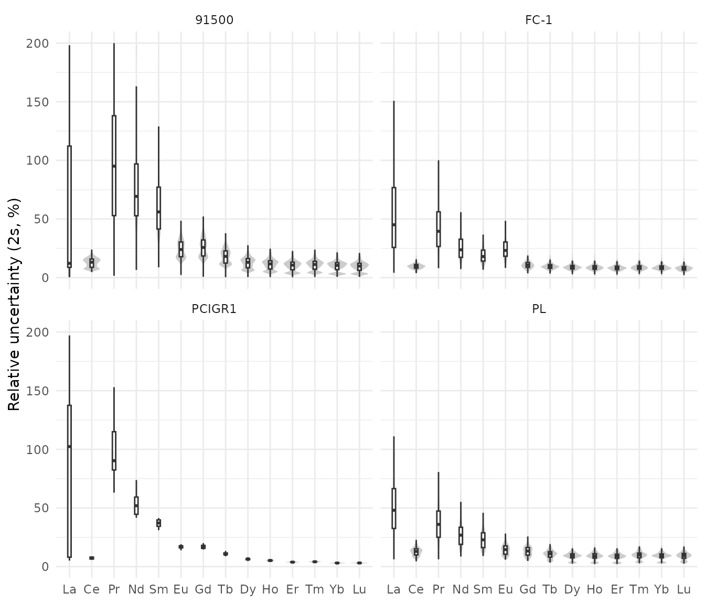
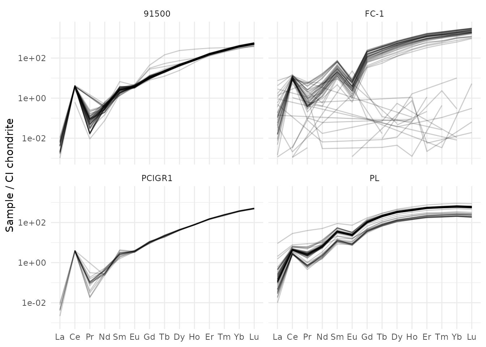
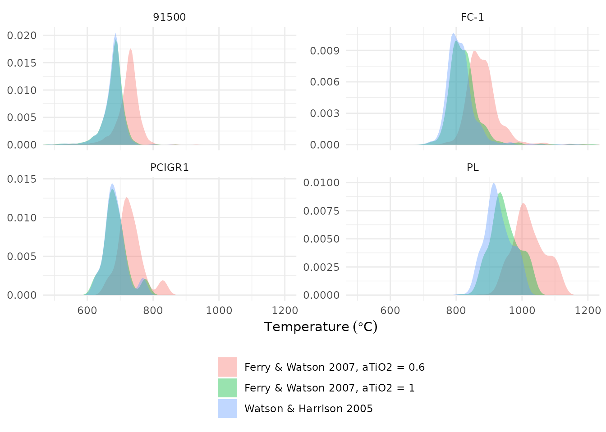
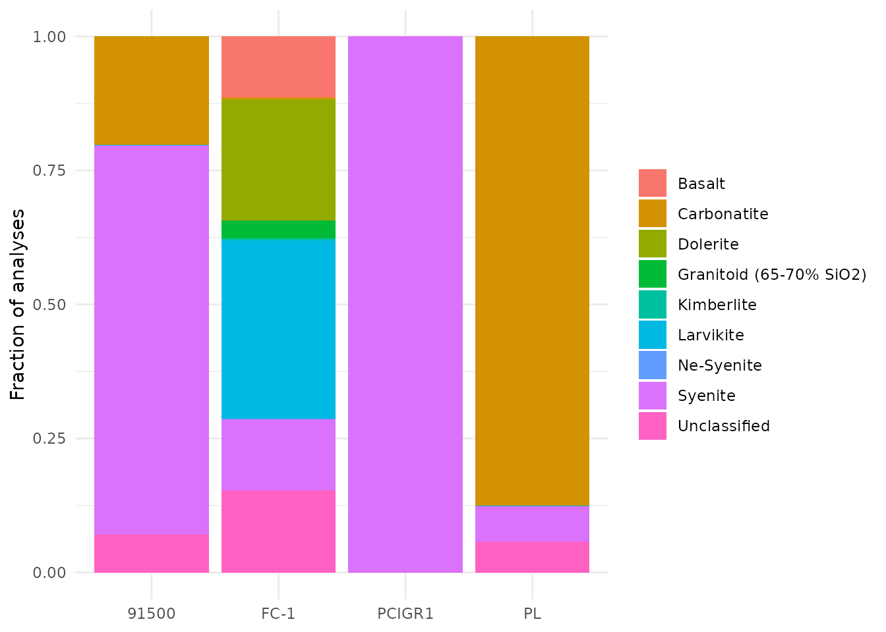

Zircon trace-element geochemistry
zircon-geochemistry.RmdThis article walks through the trace-element tools of ztR using the reference zircons shipped with the package: data quality, chondrite normalization, ratios and proxies, Ti-in-zircon thermometry, oxybarometry, source-rock classification and parent-rock estimates.
library(ztR)
library(tidyverse)
zircons <- read_csv(system.file("extdata", "stds_zircon.csv", package = "ztR"),
show_col_types = FALSE, name_repair = "unique_quiet") %>%
rename_with(~ .x %>%
str_replace_all("_mean|_ppm", "") %>%
str_replace_all("_2se_int", "_2s")) %>%
mutate(sample = recode(sample, "91500-G" = "91500", "FC1" = "FC-1")) %>%
mutate(spot = row_number(), .by = sample)
ree <- c("la139", "ce140", "pr141", "nd146", "sm147", "eu153", "gd157", "tb159",
"dy163", "ho165", "er166", "tm169", "yb172", "lu175")1. Analytical uncertainty
Before interpreting anything, check how precise each element is. The relative 2σ uncertainty of the REE per reference material:
zircons %>%
select(sample, spot, all_of(ree), all_of(paste0(ree, "_2s"))) %>%
pivot_longer(-c(sample, spot)) %>%
mutate(kind = if_else(str_detect(name, "_2s$"), "s2", "value"),
name = str_remove(name, "_2s$")) %>%
pivot_wider(names_from = kind, values_from = value) %>%
mutate(error_pct = 100 * s2 / value,
element = fct_inorder(str_to_title(str_remove(name, "[0-9]+")))) %>%
filter(error_pct > 0, error_pct < 200) %>%
ggplot(aes(element, error_pct)) +
geom_violin(fill = "grey80", colour = NA) +
geom_boxplot(width = 0.15, outlier.shape = NA) +
facet_wrap(~ sample) +
labs(x = NULL, y = "Relative uncertainty (2s, %)") +
theme_minimal()
The LREE (La, Pr) are close to detection limit in zircon and carry very large uncertainties; ratios using them (e.g. Ce/Ce*) should be read with care.
2. Chondrite normalization
normalize() divides each element by the CI chondrite of
McDonough & Sun (1995) and adds the normalized columns with the
suffix _N. Other reference tables can be chosen with
database (e.g. "taylor_mcclennan_1985.csv" for
the upper continental crust).
zn <- normalize(zircons, element_vector = c(y89, la139:lu175))
zn %>% select(sample, la139_N:lu175_N) %>% head(3)
#> # A tibble: 3 × 15
#> sample la139_N ce140_N pr141_N nd146_N sm147_N eu153_N gd157_N tb159_N
#> <chr> <dbl> <dbl> <dbl> <dbl> <dbl> <dbl> <dbl> <dbl>
#> 1 91500 0.00166 4.06 0.0934 0.482 2.32 3.75 10.7 20.8
#> 2 91500 NA 3.96 0.0820 0.281 3.90 3.65 13.1 22.7
#> 3 91500 0.00704 4.12 0.131 0.623 3.37 4.84 11.2 23.9
#> # ℹ 6 more variables: dy163_N <dbl>, ho165_N <dbl>, er166_N <dbl>,
#> # tm169_N <dbl>, yb172_N <dbl>, lu175_N <dbl>A spider diagram of the normalized REE:
zn %>%
filter(spot <= 60) %>%
select(sample, spot, paste0(ree, "_N")) %>%
pivot_longer(-c(sample, spot), values_to = "value") %>%
filter(value >= 1e-3) %>% # drop values at or below detection limit
mutate(element = fct_inorder(str_to_title(str_remove(name, "[0-9]+_N")))) %>%
ggplot(aes(element, value, group = spot)) +
geom_line(alpha = 0.2) +
scale_y_log10() +
facet_wrap(~ sample) +
labs(x = NULL, y = "Sample / CI chondrite") +
theme_minimal()
3. Ratios and proxies
ratio_calculator() adds the most common zircon ratios in
one step. It needs the normalized REE plus the raw concentrations of Ce,
U, Ti, Hf and Y (ppm) and a crystallization age in best_age
(Ma), used to correct U for decay in the oxybarometer.
Use legacy = FALSE for columns named after what they
compute (see ?ratio_calculator).
zr <- zn %>%
ratio_calculator(legacy = FALSE)
zr %>%
group_by(sample) %>%
summarise(across(c(eu_eu, ce_ce, dy_yb, yb_gd, lree_hree, hf_y, fmq, ti_temp),
~ median(.x, na.rm = TRUE)))
#> # A tibble: 4 × 9
#> sample eu_eu ce_ce dy_yb yb_gd lree_hree hf_y fmq ti_temp
#> <chr> <dbl> <dbl> <dbl> <dbl> <dbl> <dbl> <dbl> <dbl>
#> 1 91500 0.783 1849. 0.113 37.2 0.00486 42.9 -1.48 683.
#> 2 FC-1 0.0544 47.2 0.224 16.0 0.00544 8.63 -2.09 802.
#> 3 PCIGR1 0.704 229. 0.116 35.8 0.00501 51.2 -1.44 680.
#> 4 PL 0.412 9.46 0.536 6.17 0.0144 26.1 -5.82 920.| Column | Meaning |
|---|---|
ce_nd |
Ce_N / Nd_N |
dy_yb |
Dy_N / Yb_N |
yb_gd |
Yb_N / Gd_N |
lree_hree |
(La–Sm)_N / (Gd–Lu)_N |
hf_y |
Hf / Y (ppm) |
sumREE |
sum of the normalized REE |
eu_eu, ce_ce
|
Eu/Eu* and Ce/Ce* (anomaly()) |
crust |
crustal thickness from Eu/Eu*
(crustal_thickness()) |
fmq |
ΔFMQ, Loucks et al. (2020) (FMQ()) |
ti_temp |
Ti-in-zircon temperature, °C (zircon_ti_t()) |
4. Ti-in-zircon thermometry
zircon_ti_t() implements several calibrations. The
default "watson" is Watson & Harrison (2005);
"ferry_watson2007" accounts for the activities of SiO2 and
TiO2, which matters when rutile is absent (aTiO2 < 1).
zircons %>%
filter(ti49 > 0) %>%
mutate(
`Watson & Harrison 2005` = zircon_ti_t(ti_ppm = ti49),
`Ferry & Watson 2007, aTiO2 = 1` = zircon_ti_t(ti_ppm = ti49, equation = "ferry_watson2007"),
`Ferry & Watson 2007, aTiO2 = 0.6` = zircon_ti_t(ti_ppm = ti49, equation = "ferry_watson2007",
aTiO2 = 0.6)
) %>%
pivot_longer(starts_with(c("Watson", "Ferry")), names_to = "calibration", values_to = "T_C") %>%
ggplot(aes(T_C, fill = calibration)) +
geom_density(alpha = 0.4, colour = NA) +
facet_wrap(~ sample, scales = "free_y") +
coord_cartesian(xlim = c(500, 1200)) +
labs(x = expression(Temperature~(degree*C)), y = NULL, fill = NULL) +
theme_minimal() +
theme(legend.position = "bottom", legend.direction = "vertical")
The pressure-dependent calibration of Crisp et al. (2023) is
available as equation = "crisp" (with pressure
in GPa), but its implementation still has to be checked against the
paper.
5. Source-rock classification
classify_rock_long() applies the CART tree of Belousova
et al. (2002). It needs Lu, U, Ta and Nb in ppm, Hf in
wt%, Ce/Ce* and Th/U.
zr %>%
mutate(hf = ppm_to_percent(hf177),
th_u = approx_th / approx_u) %>%
classify_rock_long() %>%
count(sample, classification) %>%
group_by(sample) %>%
mutate(fraction = n / sum(n)) %>%
ggplot(aes(sample, fraction, fill = classification)) +
geom_col() +
labs(x = NULL, y = "Fraction of analyses", fill = NULL) +
theme_minimal()
Caveat. The reference zircons are not all assigned to their known host rocks: Plešovice, from a potassic granulite, falls mostly in “Carbonatite”. The implementation of the tree (thresholds, units and branch order) is still being checked against Belousova et al. (2002), so treat these classifications as provisional.
classify_rock_long_no_ce() skips Ce/Ce* (useful when La
and Pr are below detection) and classify_rock_short() uses
the shorter tree based on Lu, U, Hf, Y and Yb.
6. Parent-rock composition and crustal thickness
WR_calculator() estimates the trace-element content of
the parent melt with the zircon/melt partition coefficients of Chapman
et al. (2016). The result can be normalized again and fed to the La/Yb
crustal-thickness proxy of Profeta et al. (2015):
wr <- zircons %>%
filter(sample == "PL") %>%
WR_calculator(element_vector = c(y89, nb93, la139:lu175)) %>%
normalize(tag = "_WR", element_vector = c(y89_WR, nb93_WR, la139_WR:lu175_WR)) %>%
WR_crustal_thickness()
wr %>%
summarise(la_yb_N = median(la139_WR_N / yb172_WR_N, na.rm = TRUE),
thickness_km = median(WR_crust, na.rm = TRUE))
#> # A tibble: 1 × 2
#> la_yb_N thickness_km
#> <dbl> <dbl>
#> 1 33.1 74.9